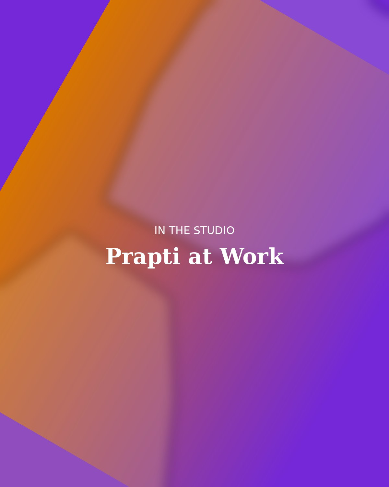

Designer & Maker
I'm a toy designer working at the intersection of industrial design and craft. My studio practice is hands-on by necessity — every piece passes through my own hands before it reaches anyone else's, from the first pencil sketch to the final sanded edge.

My Story
I trained as an industrial designer, but it was a summer spent in a woodshop that changed how I think about play. There's a particular kind of trust a child places in an object — they chew it, drop it, drag it across gravel — and that trust deserves material honesty. Wood that's actually wood. Paper that folds the way paper should.
My process starts on paper: rough thumbnails, then more deliberate orthographic sketches once a form earns a second look. From there I move into physical prototyping almost immediately — foam, then basswood, then whatever the final material will be — because tactile feedback tells me things a render never will.
Today my studio produces small-batch, premium playthings for boutique retailers and independent collectors, alongside consulting work for toy companies looking to bring more warmth and craft into their product lines.
Capabilities
The tools and methods I move between daily, from screen to bench.
Fusion 360, SolidWorks, and Rhino for parametric parts, surfacing, and DFM-ready files.
FDM & resin 3D printing, CNC routing, and hand tools for fast, tactile iteration loops.
Material sourcing, finish testing, and palette development for warm, durable surfaces.
Background
Independent studio designing and producing small-batch wooden and paper toys for boutique retail and private collectors.
Led CMF and prototyping for a consumer toy line, shepherding concepts from sketch through tooling and production.
Built foundational CAD, prototyping, and materials experience across furniture and consumer product work.
Formal training in form, ergonomics, and manufacturing methods, with a growing focus on craft-driven play objects.
PDF · Updated June 2026